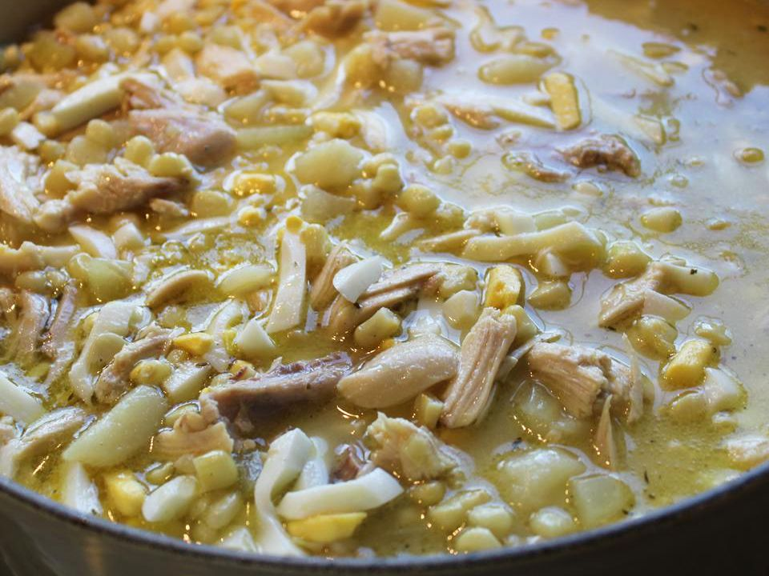

Chicken Corn Soup

Melph's Chicken Corn Soup Recipe
This is my own personal chicken soup recipe I make at home all the time.
Since it's getting to be that season again I thought I'd share it!
Ingredients
- 2 large yellow onions
- 1 carrot
- 2-3 celery stalks
- About 1 piund boneless chicken breast
- About one pound bone in thighs
- 2-3 potatoes
- Pot pie noodles